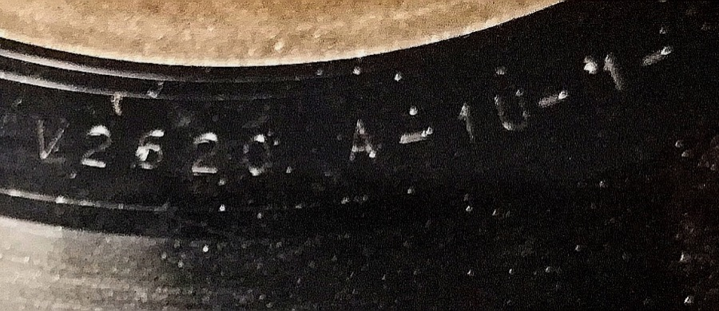

Reading the disc
Before you type it in — how to actually read a worn runout
Getting the characters off the disc is usually the hard part, decoding them is the easy part. Collectors lean on a few low-tech tricks: a jeweler’s loupe or a simple magnifying glass held under a light angled across the surface (not straight down) makes shallow etching cast a shadow and pop out far more than it does to the naked eye. This matters enough that people specifically ask for magnifier recommendations when their eyesight makes reading runouts hard — it’s a genuine bottleneck before you ever get to decoding.
